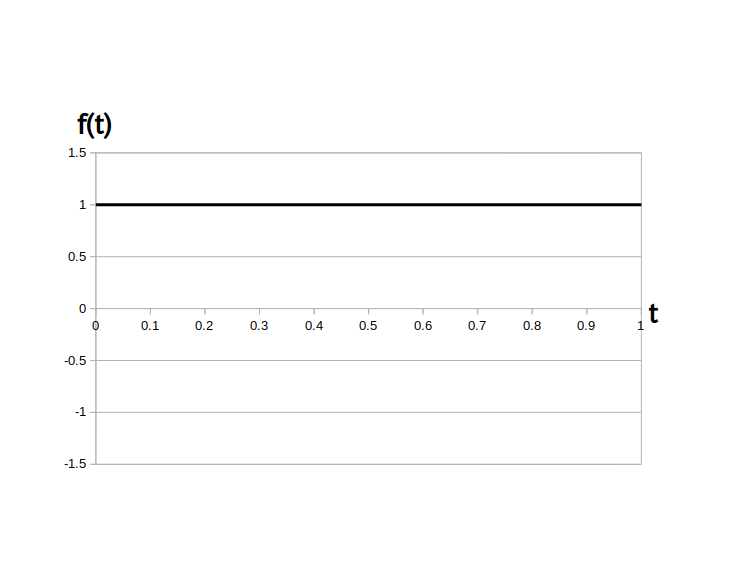

時間領域アナログサイン波つまり、「交流(AC: Alternating Current)」信号と対照的な信号として「直流(DC: Direct Current)」信号があります。
直流(DC)信号はすべての時刻において同じ大きさを取る信号で、数式的には直流(DC)信号は角周波数が $0$ の交流(AC)信号
であると考えられます。
ただし $a \cdot \sin( \phi )$ は実数の定数ですので、これを記号 $\alpha$ でまとめると、直流は次の定義となります。
\[ f(t) = \alpha \]
$\alpha$・・・実数の定数、範囲は実数全体、単位は扱う信号の種類による(ボルトとかアンペアとか度とかetc.)
例えば下の図1は直流 $f(t) = 1 $ のグラフです。
この例の様に、グラフ的には直流(DC)信号は高さ $\alpha$ の位置にある、マイナス無限大からプラス無限大まで続く横方向の直線になります。
